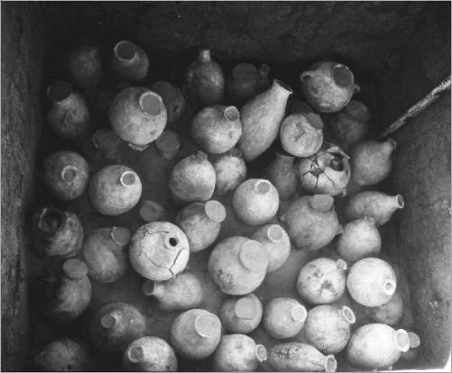
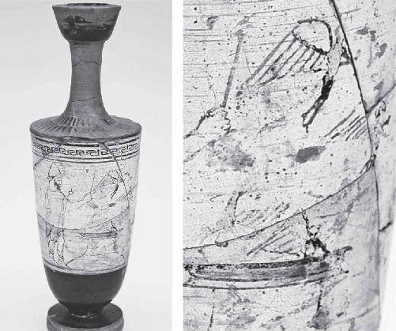
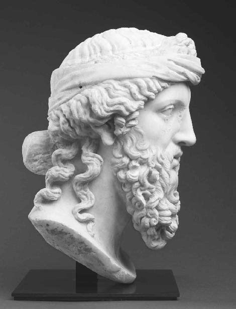
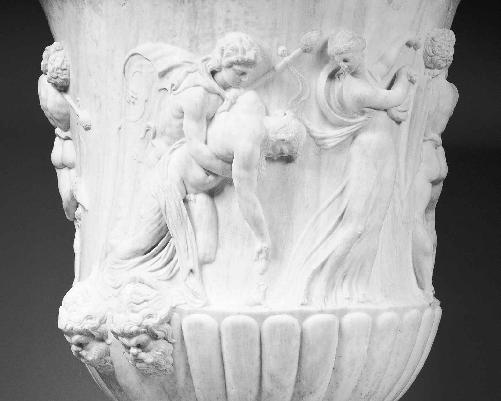
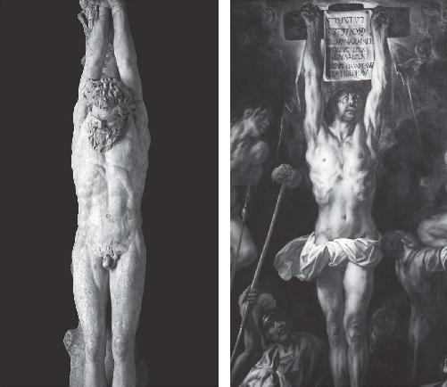

The wine formulas of Dioscorides from the first century AD are compelling proof of a psychedelic tradition in the Greek world. But like the spiked beer of prehistoric Europe, the physical evidence can often be elusive. At the moment, no sites in Greece have yielded any hard data for the Drug of Immortality. For the archaic origins of spiked wine, we have to look to the Near East, the place where it all began. In the distant past, far earlier than anyone else, the Canaanites and Phoenicians who occupied the Holy Land were ritually mixing psychoactive material into their wine. When the Greeks took control of the area in the centuries before Jesus, the old tradition was still alive. Thanks to freshly unearthed vessels and archaeochemical analyses, we now know for a fact that if ancient Galilee was good for anything, it was the kind of wine that would make Dioscorides proud.
In recent years the emerging discipline of archaeochemistry has not only rewritten the history of ancient beer, it has also rewritten the history of ancient wine. Like the nightshade beers from Spain, and perhaps even the prehistoric graveyard beers from the Raqefet Cave and Göbekli Tepe, the wine of yesterday has emerged as a far more complex and mysterious beverage than previously thought. Once again the star of the show is Patrick McGovern. In 2017, as mentioned earlier, he was the one who found the oldest Eurasian evidence for grape fermentation, dated to about 6000 BC, in what is now modern-day Georgia. But his scientific love affair with Stone Age wine started a couple decades earlier.
In 1996 McGovern’s analysis of two ceramic vessels from the Hajji Firuz Tepe site (ca. 5400–5000 BC) in far west Iran, near the border with Turkey and Iraq, proved that Neolithic wine was resinated with terebinth or pine resin, “added as a preservative and medical agent.”1 In its archaic form wine was not the polished, moderately psychoactive product coming out of today’s vineyards. McGovern says the wine enthusiasm that consolidated in this area of the Fertile Crescent “might be better dubbed a mixed fermented beverage or extreme beverage culture,” making use of “a wide assortment” of fruit, grains, honey, and plant additives to their grape juice.2 Pertinent to our investigation is what McGovern calls “special brews” with a ritualistic purpose, “perhaps laced with a flavorful or mind-altering herb.”3 Exactly what you’d need to navigate that mysterious barrier between life and death on your journey to the imperishable stars.
In “Ancient Egyptian Herbal Wines,” published in the prestigious Proceedings of the National Academy of Sciences in May 2009, McGovern details his analysis of the tomb treasure from Abydos belonging to the proto-dynastic ruler Scorpion I. It was unearthed in 1988 by the Cairo branch of the German Archaeological Institute and dated to 3150 BC, at the very beginning of the pharaonic line that would govern the Egyptian kingdom for the next three thousand years. Some seven hundred pottery jars of a “foreign type” were found perfectly intact, amounting to about twelve hundred gallons of a royal potion. After isolating tartaric acid, the key biomarker for wine and grape products, McGovern decided to search the “yellowish flaky residue” within the jars for any herbal additives. His high-tech analysis, using solid phase microextraction (SPME) and gas chromatography-mass spectrometry (GC-MS), revealed a series of complex monoterpenes that naturally occur in a number of different plants and herbs.4 Among other chemical compounds, camphor, borneol, carvone, and thymol were extracted from the ancient residue. They are all found in yarrow (Achillea), which McGovern has elsewhere described as “highly suggestive of a ritual involving psychoactive plants.”5
Using these biomolecular fingerprints, McGovern was also able to pinpoint the ancient geographic source of the additives to this special brew:
Nearly all were domesticated or cultivated in the southern Levant in advance of their introduction into Egypt.… Beginning ca. 3000 B.C., as the domesticated grapevine was transplanted to the Nile Delta, one may reasonably hypothesize that some southern Levantine herbs accompanied or soon followed it into the gardens and fields of the country. These developments considerably expanded the Egyptian pharmacopeia.
As for the seven hundred jars themselves, McGovern’s analysis of thirty-five chemical elements concluded “to a 99 percent probability” that the jars “were made of the same clays as those found in the Jordan Valley, the Hill Country of the West Bank and Transjordan, and the Gaza region.”6 In other words, they originated in the territory that would later belong to Dionysus and Jesus in the first century AD. Why did Scorpion I stockpile so much foreign wine on his deathbed? McGovern calls it “elite emulation” or “conspicuous consumption.” Like importing “liquid gold,” these wine-based elixirs from the southern Levant “were regularly exchanged between Near Eastern kings as gifts to seal treaties,” or to simply “create goodwill and lend prestige to their rule.”7 In addition, McGovern supports Ruck’s basic notion that “ancient wine and other alcoholic beverages are known to be an excellent means to dissolve and administer herbal concoctions externally and internally.” Before the easy availability of modern synthetic medicines, McGovern says “alcoholic beverages were the universal palliative.”

Wine jars unearthed in chamber 10 of Scorpion I’s royal tomb from Abydos, Egypt, dating to ca. 3150 BC. The infused wine was spiked with plants and herbs from Jesus’s future home in the southern Levant. (© Deutsches Archäologisches Institut Kairo, DAI Cairo)
Because the divine intoxicant was meant to accompany the Egyptian pharaoh into the underworld, however, its use as an advanced religious biotechnology cannot be overlooked. Just like the beer from Mas Castellar de Pontós, the special brew may have fueled the visionary states that allowed Scorpion I and later Egyptian kings to both witness and become one with the gods. Although priestesses are thought to have been the original enologists, and “lore surrounding the vine personified it as a female entity,” Osiris likely predated Dionysus as the first male wine god.8
According to the oldest surviving illustrated papyrus roll, which preserves the ancient Egyptian coronation ceremony in amazing detail, wine would be presented as an “Eye of Horus” in order to cure the king of his “spiritual blindness.”9 A ritual meal was then ingested as part of the “secret rites” engineered to transform Osiris’s earthly representative into the wine god himself. In this supreme act of “mystical conjunction”—drinking the god to become the god—the human king sought to merge with Osiris as the Lord of Death. In preparation for his eternal sleep, the royal initiate is said to have traveled to and actually experienced the cosmic underworld, receiving “the awesome knowledge of what lies beyond the threshold of death.”10 Thousands of years before Jesus or the lamas interviewed by Father Francis, the Egyptian pharaohs are said to have acquired the light body of a “shining spirit” (akh in Egyptian) that allowed them to traverse the starry afterlife.11
Did psychedelic wine, first imported from the southern Levant, really provide the means, motive, and opportunity for this three-thousand-year-long religious enterprise? According to the late archaeologist and anthropologist Dr. Andrew Sherratt, the “vast quantities of wine” consumed in weeklong Dionysian festivals at the Temple of Karnak seemed worthy of a closer look. He noticed the same blue water lilies (Nymphaea caerulea) depicted on Karnak’s pillars were also found as a garland around the golden neck of Tutankhamun, when the pharaoh’s tomb was first opened in 1922.12 Another incarnation of Osiris, the blue water lily is now extremely rare in the wild, but once grew abundantly on the shallow banks of the Nile. It was considered Ancient Egypt’s most sacred plant. And with the active compounds, apomorphine and nuciferin, it was full of psychoactive possibility.13
As part of the Sacred Weeds series that aired on the UK’s Channel 4 in 1998, Sherratt and his colleagues (an Egyptologist, an ethnobotanist, and a pharmacologist) enlisted two courageous volunteers to drink some wine-soaked flower concoction in the first televised re-creation of the ancient sacrament. After a nice fit of the giggles, the restless duo is seen frolicking through the rainy gardens of Hammerwood Park in East Sussex. Though no visions of Osiris were recorded, the blue water lily was shown to have undeniable mind-altering effects, even at relatively low dosage. The whole trippy experiment makes for excellent YouTube viewing at https://www.youtube.com/watch?v=Vx2AIBgnakI.
As we move closer to Christianity’s home turf, the plot thickens. Some of the best evidence for ancient spiked wine just happens to come from modern-day Galilee. Where the magical appeal of the drink that would later show up in the Wedding at Cana and Christianity’s founding event, the Last Supper, extended far beyond its alcohol content.
The homeland of Jesus was praised in antiquity for its wine production, going all the way back to the Canaanites. In 2013 murky hearsay met hard fact when the Tel Kabri site, an hour north of Nazareth, made international headlines. Forty jars of herbal wine were unearthed in what became known as the “world’s oldest wine cellar,” dating to about 1700 BC.14 Organic residue from each of the jars was subjected to thorough testing at the Brandeis University Department of Chemistry. The results of the GC-MS analyses showed remarkable consistency across the entire batch, indicating “a sophisticated understanding of the botanical landscape and the pharmacopeic skills necessary to produce a complex beverage that balanced preservation, palatability, and psychoactivity.”15
In their peer-reviewed paper published in the open-source journal PLoS ONE in August 2014, the interdisciplinary team identified a number of organic compounds in the wine. Andrew Koh (senior research fellow at the Massachusetts Institute of Technology’s Center for Materials Research in Archaeology and Ethnology), Assaf Yasur-Landau (professor of archaeology at the University of Haifa), and Eric Cline (professor of Classics, anthropology and history at George Washington University) noted the challenge in trying to pair these freshly captured biomarkers with their ancient organic sources. Like McGovern, they acknowledge that the compounds are present at varying concentrations in many different plants and herbs. Nevertheless they can still piece together an accurate match based on “the natural distribution of ancient commodities” and “surviving documentary accounts” from ancient Galilee and the surrounding area.
Aside from Greek, many ancient Near Eastern languages like Egyptian, Sumerian, Akkadian, Elamite, Hittite, Hebrew, and Aramaic have preserved the names of a dizzying number of plants, herbs, and fungi. By some estimates, however, only 20 percent of those species referenced in the dusty texts “have been definitively identified by genus.”16 That’s why, for example, the debate over the kind of “laurel” employed by the Pythian priestesses at Delphi can rage on, because the ancient plant may not quite correspond to our modern scientific classification of the Laurus genus, let alone the Laurus nobilis species. But the written ethnobotanical evidence, such as the wine formulas of Dioscorides, are only half the puzzle. Completing it demands the rigorous collection of organic residue from ancient vessels, which can then be paired with paleoecological maps that plot where each of the analyzed species actually grew in antiquity. While this interdisciplinary effort was not part of the archaeological mind-set until quite recently, the combination of ancient texts, chemical data, and habitat maps is finally shedding much-needed light on the art and science of ancient wine-making. And the results from places like Tel Kabri show exactly where the Greeks inherited their taste for infused, mind-altering wine.
In addition to tartaric acid, the GC-MS readings at Tel Kabri included cinnamic acid, oleanolic acid, cineole, caryophyllene, and methyl syringate. According to the team, the most likely candidates that would have spiked the palatial red wine at Tel Kabri include honey, storax resin (Liquidambar orientalis), terebinth resin (Pistacia palaestina or terebinthus), cyperus roots (Cyperus rotundus), cedar oil (Cedrus libani), juniper berries (Juniperus communis or phoenicea), mint (Mentha), myrtle (Myrtus communis), and cinnamon bark (Cinnamomum). The many ingredients of this “luxurious ancient concoction” are attested as wine additives in the so-called Mari Letters, a collection of Mesopotamian tablets written in Akkadian in the eighteenth century BC. Evidence of a similar herbal kick appears in the widely published Egyptian recipes for kyphi (temple incense) that began circulating in the fifteenth century BC.
Nothing like the blue water lily was identified in the regal cellar, but the adjoining banquet hall hints at the religious nature of this special brew.17 As does the Juniperus genus, certain species of which are revered for their psychoactivity. Juniper berries contain rich, volatile oils with “antiviral, antibiotic, and antifungal properties,” which may explain their superstitious use for protection in traditional rites and ceremonies.18 Historically shamans in Central Asia have resorted to juniper for “ritual, magical and medicinal purposes,” making it “likely one of the oldest fumigants of humankind.”19 The Hunza people of the Hindu Kush in northern Pakistan, for example, say juniper is directly responsible for the “supernatural powers” of their bitaiyos (the magicians, healers and prophets):
They manifest their abilities only after inhaling the smoke of burning juniper branches and drinking warm goat’s blood. After this, they danced to rhythmic drum beats until they had attained the trance state. When asked about the future, they passed on the messages of the fairies in the form of songs.20
For the Canaanites the wine additives identified at Tel Kabri could have come in handy during their far-reaching but understudied marzeah ritual, a drunken funerary feast or memorial banquet for the dead that could last up to a week.21 The marzeah was reserved exclusively for the upper class of Near Eastern society. As a kind of guild or drinking club, it has earned comparisons to the more well-known wine banquet in Ancient Greece, the symposium. McGovern says, “music, dance and the recital of Canaanite myths accompanied the merriment, along with bouts of sexual intercourse to match any Roman bacchanal.”22 But the main purpose of the marzeah, as with the skull cults and graveyard beers we tracked over ten thousand years from Stone Age Israel and Turkey to Ancient Greece and classical Iberia, was to acquaint its participants with the afterlife and “to secure their beatification after death.”23
Particularly fascinating about the marzeah is the possibility that it acted as the bridge between the more archaic drinking ceremonies from Egypt and the Near East, including Tel Kabri, and the later Mysteries belonging to both Dionysus and Jesus. Common to all these rituals is the concept of ingesting a special potion for a singular purpose: to transcend ordinary time and space, reaching a state of consciousness where the ancestors still live and breathe, and the gods and goddesses are made real. For lack of vocabulary, scholars often refer to this place as the “underworld.” And maybe the initiates of the marzeah truly believed they went somewhere, just like the initiates of the Greek and Christian Mysteries in the centuries that followed. But at the end of the day, we’re only trying to get hold of the mechanism that created the sensation of otherworldly travel, and the conviction that creates whole religions in the wake of these unforgettable mystical experiences. The data from Mas Castellar de Pontós show that ordinary beer could hardly take credit for the survival of a graveyard tradition that likely reaches far back into the Stone Age. For the marzeah ordinary wine doesn’t seem to be responsible for its long history either.
Clues to the bizarre Canaanite ritual were embedded in one of the cuneiform tablets of Ugarit (modern-day Syria), composed just a few centuries after the royalty at Tel Kabri hatched their psychoactive wine. Despite many failed attempts to decipher the ceremony of the dead, a leading scholar of Canaanite religion and mysticism may have finally figured it out. In “The Marzeah and the Ugaritic Magical Ritual System,” published in 2015, Gregorio del Olmo Lete deconstructs the text known as The Divine Feast of El, referring to the chief Near Eastern deity of this period. For del Olmo Lete, professor emeritus at the University of Barcelona, the literal translation of marzeah is “descent,” implying a journey to the underworld. Alternatively it could mean “a tool that makes [one] fall” or collapse in ecstasy, or simply lie down dead.24
In a reading that parallels the Indo-European graveyard beers, del Olmo Lete sees evidence for hallucinogenic wine as advanced religious biotechnology, calling The Divine Feast of El a “handbook” or “recipe” for “intoxication praxis” that induces a “cataleptic state of trance.”25 In this “altered state of consciousness reached by drunkenness,” the initiate is permitted “terrifying entry” into the mysterious “Other World” of “infernal ghosts,” where a skilled explorer can secure divinatory answers to life’s existential questions from the godlike spirits.26 Or maybe it’s the “fairies” talking. To awaken from this near-death experience, the Ugaritic text orders the paralyzed body of the initiate to be anointed from forehead to navel with an unidentifiable wild plant.
Every GOVERNMENT WARNING label on every bottle of Pinot in the United States cautions against a series of risks: birth defects, car accidents, machinery disaster. Not a single one mentions the possibility of dead relatives showing up at the door. Like the written wine formulas of Dioscorides, nothing about the marzeah’s special brew even remotely resembles anything we would call “wine.” McGovern’s “extreme beverage culture” of the eastern Mediterranean had crafted an extreme drinking ritual to accompany their extreme drink, perhaps providing the optimal setting to showcase their “sophisticated understanding of the botanical landscape” and “pharmacopeic skills.” The active ingredients that may have potentiated the mixture remain an absolute mystery. But given the hard, archaeochemical data of the herbal blends from Egyptian Abydos and Canaanite Tel Kabri, it’s a safe bet that someone like Andrew Koh at the Massachusetts Institute of Technology may crack the marzeah code in the years to come.
At forty-four years old, Koh is part of the younger generation that benefited from the work of McGovern and other pioneers such as Richard Evershed at the University of Bristol. But unlike most of his colleagues in the still-maturing discipline of archaeological chemistry, Koh has an additional background in Classics. It gives him a unique transdisciplinary perspective on the search for ancient beverages. Because of his familiarity with the tradition of drugged wine from Homer to Dioscorides and beyond, Koh is rather open-minded about the possibility of the marzeah linking the Galilee of the Canaanites in 1700 BC to the Galilee of the Ancient Greeks and Christians in the first century AD. As a sanity check after my trip to Paris, I called his office in Boston to make sure Ruck’s scholarship on psychedelic wine was actually supported by the latest evidence.
Koh told me about the recent discovery of yet more luxury liquids at another site in Upper Galilee. Soon to be published in the Bulletin of the American Schools of Oriental Research, his organic-residue analysis of small vessels from a Hellenistic administrative building in Tel Kedesh, on the border with Lebanon, revealed oil from the iconic Phoenician cedar (Cedrus libani) was spiked with the same imported storax resin (Liquidambar orientalis) from the same region of Rhodes that was found fifteen hundred years earlier in the Cannanite wine of Tel Kabri. Dating to the second century BC, it shows the continuity of psychotropic infusions in the region, well into the period when Greek influence was at its height. So even if he hasn’t found it yet, the odds of Koh eventually securing the hard evidence for overtly psychedelic wine seem good. The chemical answer to the marzeah mystery is within reach.
“I think you’re absolutely right,” Koh said into the phone. “When we’re talking about ancient wine, we tend to have a one-size-fits-all approach. But think about beer these days, for example: it’s not just for drinking and watching football. We have some really complex beers with different alcohol and flavor profiles. Ancient wine was no different. If you look carefully at the historical record, there was wine for very casual settings, all the way to very formal events like the Mysteries. But like everything else in life, it’s probably not so binary. Maybe it’s our puritanical background, but we want to separate the two—the casual, mundane drinking from the sacred, religious drinking. Back then, however, the lines were more blurred, and things more intertwined.”
“Like at Tel Kabri or Tel Kedesh?” I asked. “And maybe even the earliest Christian communities, who could have been influenced by the marzeah or Dionysian Mysteries that we know were active in Galilee at the time of Jesus?”
“Right. At first glance, the wine cellar at Kabri seems like wealthy elites getting hammered and having a good time. But then you look more closely, and I think that’s too simplistic of an answer. Because they’re adding things to the wine, and those ingredients are not just for preservation. It’s not solely to get a buzz from the alcohol. When you look at the literature from the time, there are festivals in Egypt and the Levant like the marzeah that are just rife with ritualistic meaning. They are literally communing with the gods and so forth. So I think Kabri does connect to the later Hellenistic and Roman periods, where the Mystery or cultic aspect only intensifies. I think what we in the archaeological community have been missing for a while now, is that wine is such a perfect beverage—once the right ingredients are added to it—to have a profound religious experience, with a psychotropic effect. So I call that kind of wine a potion, because it’s not just a drink. It’s a sacrament.”
Koh is confident that the smoking-gun evidence for psychedelic wine is out there in the birthplace of Christianity, patiently waiting just underfoot. For many centuries, right up until the Wedding at Cana and the Last Supper, the marzeah documented in The Divine Feast of El remained a staple across the region, uniting ancient Israel, Judah, and Babylon in El’s “wine-god cult.” Like the Egyptians, Canaanites, and Phoenicians before them, the Israelites and their neighbors were just as interested in the cult of the dead and its special wine that put the Holy Land on the map in the first place.
The pagan ritual is actually mentioned twice in the Old Testament, disparagingly, of course—confirming the survival of this rather primordial tradition into Biblical times.27 Despite the Jewish high priests’ opposition to the wine-fueled séance, pilgrim flasks, wine decanters, and amphoras have been unearthed from the ancient tombs in and around Jerusalem.28 And farther south, more death-cult remains have come to the surface. In September 2009 a sandstone block accidentally turned up in Wadi Musa, near the Dionysian temple in Petra. Its partly legible inscription confirms that the hallucinatory marzeah ritual was still alive and well during Jesus’s lifetime. The text is “clearly dated” to the reign of the high-profile Nabataean king Aretas IV Philopatris (9 BC–AD 40). His daughter, Phasaelis, married King Herod Antipas, the infamous ruler of Galilee. To please his second wife after divorcing Phasaelis, Herod famously served the head of John the Baptist on a platter.29
Where the marzeah ends and the Dionysian banquet begins, nobody really knows.30 The God of Ecstasy had slowly taken root in the “ancient cultural internet” of North Africa and the Levant that Osiris and El had been seeding with their magic for millennia. Eventually, part of the wine god would head west to Greece as Dionysus, debuting on Euripides’s stage in the fifth century BC with his Asian maenads after a tour through Anatolia. Over in Athens, Dionysus would become the Lord of Death like his Egyptian and Near Eastern counterparts, leading an annual train of ghosts into the city during the springtime Anthesteria festival. Similar to our Halloween, it was the time of year when, “attracted by the smell of the wine that rose from the opened pithoi [earthen pots] and spread throughout the city, the souls emerged from the underworld.”31 But another part of the wine god would simply stay put, right where it all began over three thousand years before Jesus, who would become the latest God of Ecstasy to overcome death. The Nazarene was well acquainted with the underworld from the Harrowing of Hell episode that supposedly took place in the three days between Jesus’s death and resurrection, when “the Gospel was proclaimed to those who are now dead.”32
It’s a neat line of succession: Osiris to El to Dionysus to Jesus. The critical thing that unites them all is extraordinary wine that blurs the boundary between life and death. Immortality potions. But there’s a major difference between Dionysus and Jesus on the one hand, and their divine predecessors on the other: a political disagreement. Did this wine belong to the 1 percent or the 99 percent? Was it meant for the pharaohs, royalty, and elite? Or was it meant for everybody? Who should have access to the nectar of the gods?

White-figure vessel (lekuthos) from Attica, Greece, dating to 470 BC. Containers like this were frequently deposited in ancient graves as part of Greek funerary rituals. The god Hermes is depicted wielding his magic wand in the sacred role of psychopomp, escorting the recently deceased into the afterlife (left). From the mouth of the half-buried earthen pot (pithos) to Hermes’s right, the souls of the dead can be seen emerging from the wine (right). Some fly off to the underworld on angelic wings. Others, more demonic, are being crammed back into the holy wine from which they came. The Halloween-like Anthesteria festival has come to end. And so too, the drinking of the drugged elixir in honor of Dionysus, the Lord of Death. Courtesy of Dennis Graen, Friedrich-Schiller-Universität Jena, Germany
Religious revolution was afoot in pre-Christian Galilee. The intoxicant had begun leaking from the Near Eastern palaces and mansions the same way the kukeon had slipped from Eleusis, traveling to wealthy homes across Athens during the scandalous imitation of the sacred rites known as the Profanation of the Mysteries. As A. D. Nock insightfully remarked in the last chapter, the spiritually curious were being drawn to a kind of “private spontaneous pagan piety,” where elements of “choice, movement, and individual enthusiasm” were preferable to whatever soul-crushing boredom the local temples had to offer the pagan and Jewish residents of the area. By the time of Jesus, a democratizing trend led by ecstatic women had revamped sacred wine into what Euripides, four centuries earlier, had called a sacrament for “simple folk” or phauloteron (φαυλότερον): “equally to the rich and to the lowly has [Dionysus] given the painless joy of wine.”33
So forget the Egyptian pharaohs. Forget the royal families at Tel Kabri, Petra, and everywhere in between. Forget the marzeah, reserved only for the vineyard-owning aristocrats with nothing but time and money to waste on their spooky, sometimes decadent ritual.34 Forget the Jewish high priests who banned the marzeah, with all its “occult” implications.35 And forget the buzzkill Pharisees, who later in the Gospels would call Jesus a “drunk” or oinopotes (οἰνοπότης).36 People were aching for their own little taste of that miraculous wine. And for the already-smashed wedding guests at Cana, where the only way for the Jesus of John’s Gospel to prove his divinity was to perform the “signature miracle” of Dionysus, that’s exactly what they got: 180 gallons’ worth.
By bringing the oldest trick in the Dionysian book back home to the Near East, where the sacrament itself was born in the distant past and where the God of Ecstasy had reestablished a foothold thanks to the regional acceptance of Greek culture, the Gospel of John was issuing a stark challenge to the 1 percent of the first century AD. From the beginning, the Christian potion was destined for mass consumption, just like the Dionysian potion that had been working its magic in Greece and Greek-speaking hubs of the eastern Mediterranean for centuries, including parts of Galilee. Unlike the ritual beverages that preceded it, the wine at Cana was meant to travel all over the ancient world, into the hands of humble people with humble hopes for the afterlife. And into humble parts of the Roman Empire, still farther west of Greece, where the wine god that Jesus would soon replace was in desperate need of a revival. All thanks to the politicians in Rome.
As I exit the Salle des États, I take one last look at the Mona Lisa’s patronizing smirk. All night long, when she is blanketed in moonlight, da Vinci’s masterpiece is stuck here staring at a complete and total fantasy. Not through any fault of Veronese. The Wedding Feast at Cana is a fair interpretation of John’s Gospel, but the scene almost certainly never happened. Why is the raucous episode from ancient Galilee recorded in John and nowhere else? And why the shameless infringement of the Dionysian epiphanies from Elis and Andros? Scholars like Dennis MacDonald have concluded that John cast Jesus in the same mold as the God of Ecstasy to emphasize his godhood. Fair enough. John gets zero points for originality. But a god without wine in the southern Levant was like a car without wheels, so perhaps John had little choice but to incorporate the “extreme beverage” into that particular Epiphany around AD 30. Nevertheless, the question remains. What’s the real relationship between Jesus and Dionysus? And what’s the real message here?
For those Greek speakers who could recognize the secret “symbols” and “language,” as A. D. Nock put it, John had many more surprises in store. Cana was just the opening act. A sneak peek of the real dinner, three years later, that would forever alter the course of human history, putting Jesus at the top of our species’ virtual Twitter feed with 2.42 billion followers. The biggest religion on the planet today. The biggest religion ever. It all started at the Last Supper, a more intimate affair among friends. Where the wine became blood, and Jesus introduced part two of the trademark Dionysian sacrament: the raw flesh.
In John’s poetic treatment of the event, the sacred combination of bread and wine, flesh and blood, represents the most advanced biotechnology in all of antiquity. What Saint Ignatius would later call the pharmakon athanasias, the Drug of Immortality that guaranteed instant divinity and life everlasting. To the Greeks this magical procedure was known as apotheosis, or deification. Anyone who ate and drank the god became the god. Once the exclusive property of Egyptian pharaohs and Near Eastern elite, the sacrament had been dribbling over the mountains and forests of the Mediterranean ever since Euripides. But civilizations rise and fall, and the Mysteries have a way of getting caught in the cross fire. Once obsessed with the wine god whom they inherited from their predecessors, especially in that Greek-speaking part of southern Italy known as Magna Graecia, a moral panic had swept through the Roman Empire when men started joining in the debauched festivals previously restricted to women.37 The Roman senate prohibited the full-blown Bacchanalia in 186 BC, creating an uncertain future for the God of Ecstasy.
Around 20 BC the conservative historian Livy wrote his dramatic retelling of the scandal, portraying it “as a reaction against the sudden infiltration of too many Greek elements into Roman worship.”38 The final straw for the Roman senate was the Italian witch, Paculla Annia, the scandalous high priestess of Bacchus in Campania—the heartland of Magna Graecia, home to Naples and Pompeii.39 In the years leading up to the mass crackdown on the Dionysian Mysteries in 186 BC, Paculla Annia refused to initiate any men over the age of twenty.40 “Rather than having women in the control of men,” says Dr. Fiachra Mac Góráin, a classicist at University College London, “this cult is putting young, impressionable men under the control of women.”41 In a staunchly patriarchal society like Rome, that was an act of war. So the authorities made the flood of magical wine slow to a trickle.
By the time of Jesus the world was ready for another injection of holy madness. At long last, the faithful may have cheered, the Son of God had come home to Galilee. Call him Jesus, if you like. But when John’s Gospel called him the “only-begotten” or “unique offspring” of God, residing in the “lap” of the Father, his audience knew what he meant. After all, where else but Nazareth would Jesus grow up? Only minutes from Dionysian country in Scythopolis. And just down the road from the Mona Lisa of Galilee in Sepphoris. Of all the places for Jesus to call home, the drug-riddled Napa Valley of the ancient world just happened to be the one. Where wine was a sacrament for the cult of the dead that found inspiration in both the long-running marzeah and the Dionysian Mysteries. And where the magician from Nazareth and his earliest followers could have sourced an endless supply of those mind-altering substances the southern Levant had been pumping into the area for three millennia. The same drugs that would soon be encyclopedically catalogued in the most consulted, most durable manuscript of the next two thousand years: the Materia Medica.
Less than a decade after Jesus’s death, Dioscorides was born in Cilicia in Asia Minor (near the modern Turkish-Syrian border). He studied in nearby Tarsus, the birthplace of Paul, who before becoming Saint Paul was simply Saul of Tarsus. The plants, herbs, and fungi documented by the Father of Drugs on his extensive travels with the Roman army under Emperor Nero are “overwhelmingly concentrated on the Greek-speaking world of the Aegean and the Levant.”42 It was the epicenter of experimental wine mixing, where a heavy pagan population squeezed every drop of psychoactive potential from its ancient cash crop. And where the new Dionysus had miraculously returned for one final mission.
Even if they didn’t feel it on the eastern frontier of the Roman Empire, the would-be Christians knew the Dionysian Mysteries had faced an existential crisis in Italy, where as many as six thousand followers of the God of Ecstasy were executed in one fell swoop during the Roman senate’s bloody campaign in 186 BC.43 There was no predicting the next moral panic. The most powerful empire in the world, an all-male enterprise, was clamping down on a female-led religion that promised immortality to its initiates. With only a few ounces of its secret potion, this religion with no name had finally broken the spiritual exclusivity of Egypt and the Near East, and the monopoly of the Greek families in Eleusis. And for largely political reasons the Romans wanted this dangerous religion, what Euripides once called “an immoral trick aimed at women,” to simply go away.44 But the Dionysian Mysteries couldn’t just disappear. Everyone deserved a taste of divinity. So perhaps the only way to keep the magical wine alive was to fill the ancient world with more Paculla Annias than the Roman Empire could ever possibly control. But the wilderness wasn’t the safest or most convenient place to win new converts to the Greek death cult.
The God of Ecstasy had to come indoors.
And Christianity had the answer. On the eastern coast of the Mediterranean, everything was up for grabs in the first century AD, when the latest Son of God, born of a virgin, stepped into the spotlight. In the Gospel of John, the Wedding at Cana may have set the Drug of Immortality loose on the streets of Galilee. But it was the Last Supper that brought the Christian Eucharist into people’s homes. Even Dionysus himself never managed to pull that off.
Aside from the public festivals, and the few Athenians who blasphemed Eleusis during the Profanation of the Mysteries, Dionysus’s churches were kept off the grid, in the open air of the Greek countryside. So as far as John’s audience was concerned, this new Dionysus had just upstaged the old Dionysus. And their interpretation of John’s Gospel would have been very different from today’s. The Jesus they would have seen was a Jesus who didn’t come to start a new religion. But a Jesus who came to save the fragile Mysteries with an epic, encore performance. A Jesus who came to open source the magical wine for the masses, and to finish the populist movement he started in Greece.
When his name was Dionysus.
It is impossible to understand the roots of Christianity without understanding the world in which it appeared. For roughly the first three hundred years of its existence, Christianity was an illegal cult. Just like the cult of Dionysus. By appealing to poor folks, and especially women, Jesus was simply picking up where the Dionysian Mysteries left off. Politically he posed the same threat to the Roman establishment as Dionysus. Anything that directed attention and loyalty away from by the public cult of the emperor and the traditional Roman gods was considered dangerous. Because at the time, separating young, eligible men from their military service and busy mothers from their family obligations upset the chain of command. Neither belonged in the wilderness, getting high with the God of Drugs. And they didn’t belong at the wedding party where Jesus unveiled Dionysus’s “signature miracle” either. John makes the general paranoia pretty explicit when he records the reaction of the Jewish high priests to Jesus’s string of magic acts following Cana: “If we let him go on like this, everyone will believe in him, and the Romans will come and take away both our place and our nation.”45
But the politics and legality were only part of the concern. At stake was the entire social order. Jesus and Dionysus were two peas in a pod. They both stood for the revolutionary principle that everybody deserved the nectar of the gods, regardless of class. While the Greeks and southern Italians had many centuries to manage the uncomfortable balancing act between the 1 percent and the 99 percent, Jesus’s open invitation to an immortality potion like the Eucharist would have shocked the wealthy pagans of Galilee, as well as the influential Jewish families of Jerusalem. Magical wine was supposed to be their prerogative, just the way it had been for thousands of years. Salvation didn’t belong in the hands of commoners. After his success in classical Athens, Dionysus was the first monopoly-buster in the Near East. For an extra kick in the pants, Jesus showed up a few centuries later with an even more convenient solution for anyone dissatisfied with the old-time religions. A solution the home brewers at Mas Castellar de Pontós had already discovered. Simply invite some friends over, and cook the sacrament up at home.
In the end Dionysus and Jesus were both really bad for the status quo. There’s a reason the crackdown on the Bacchanalia by the Roman senate in 186 BC was the first large-scale religious persecution in European history.46 And there’s a reason Christianity followed suit. In the eyes of the ruling class, the idea of continuity between the Greek and Christian Mysteries was pretty darn clear. Barbaric to the core, they both offered direct access to the Lord of Death following the consumption of the god himself in the form of fortified wine. With their exotic sacraments Dionysians and Christians fit the same vile narrative. According to Mary Beard, John North, and Simon Price, the leading historians of Roman religion, “The issue was exacerbated by the appeal of Christianity to women. The combination of stereotypes of foreign and female, which had been deployed by classical Greeks of eastern women out of control, has always been especially potent.”47
This is the political and spiritual backdrop of the pagan continuity hypothesis. And it can’t be dismissed. The same people who were attracted to the radical cult of Dionysus were the same people who were attracted to the cult of Jesus. They were not so different from the spiritual-but-not-religious of today, seekers on the hunt for transcendence. A real experience with real meaning, where the key to that Dionysian experience was the kind of wine that was universally regarded as a pharmakon. It drove the witches like Paculla Annia and their covens mad. It made them delirious. It provoked visions. And in addition to the religious conservatives in Athens who didn’t want their Eleusinian Mysteries profaned, it also pissed off the authorities in Rome—the same authorities who would later accuse the Christians of cannibalism and throw them to the lions.
The immortality potion is what unites the Ancient Greeks of the final centuries BC with the paleo-Christians of the early centuries AD. As we will see in detail in the next chapter, the more the Gospel of John could convince potential recruits that the Christian Eucharist was indeed the same pharmakon, the greater the chances of the young faith’s success in a world where the Dionysian sacrament still dominated the ancient Mediterranean. Where, with every drink from the sacred cup, the maenads risked being branded as criminals. The early Christians ran the same risk, of course. But for some, the price of religious liberty has always been worth the cost.
The way the Greek and Christian Mysteries were targeted by the Roman Empire is well documented in the historical record. Largely ignored by modern scholars, however, is the degree to which the common sacrament of wine motivated the harsh suppression of these revolutionary movements. And whether the great secret of Dionysus and Jesus alike—the secret that unlocked the key to immortality—was, in fact, drugged wine.
It has been a long afternoon, and the Louvre is about to close. I just need a few minutes of peace and quiet to wrap my mind around everything I’ve seen today. I know exactly where to go to escape the tourists. I make a beeline for the Winged Victory of Samothrace and descend the grand staircase to the museum’s Greek collection on the lower level of the Sully Wing. I sneak past the crowd admiring the armless Venus de Milo and duck into my oasis, the Salle des Caryatides. Intentionally or not, the Louvre has constructed a pretty incredible tribute to the God of Ecstasy.
Most of the marble to be found in Room 348 is Roman, based on Greek originals. Like the Italian head of Dionysus from the second century AD, with those “luxurious locks” twisting their way down the god’s neck and shoulders. If you ever wondered why Jesus was the only Jewish man of first-century Galilee to get the Jim Morrison look, this is why.48 Across the hall, the woodland god Pan, straight out of Narnia, is clutching a bunch of grapes. After leading choirs of nymphs through the hills of Greece, the wine god’s confidante would always take a midday nap. Whenever startled by a passing shepherd, Pan would wake with a terrifying shout, giving us the word “panic.” The goat-man was the illiterate peasantry’s last refuge against an encroaching Christianity. As a result, our popular image of Satan likely comes from this horned, lustful deity—the “rustic one” (paganus in Latin, whence the word “pagan”).49

Marble head of Dionysus from the second century AD, based on Greek statuary from ca. 500 BC, currently in the Salle des Caryatides in the Louvre. The feminine, flowing hair of the God of Ecstasy inspired early portrayals of Jesus that have persisted ever since. Compare with the Good Shepherd in the Hypogeum of the Aurelii from the third century AD (here) or the head of Jesus in Veronese’s The Wedding at Cana from the sixteenth century AD (here). Stéphane Maréchalle; (© RMN-Grand Palais / Art Resource, NY)

Dating to ca. 40 BC, the Borghese Vase was discovered in Rome around 1566 and is now a prime attraction of the Salle des Caryatides in the Louvre. The devotee is completely lost in the kind of trance, ecstasy, and madness that defined the holy wine of Dionysus. When the sacrament was properly prepared and consumed, we can imagine divine communion with the god looking something like this. Hervé Lewandowski; (© RMN-Grand Palais / Art Resource, NY)
I circle the Borghese Vase. Standing five and a half feet tall, it boasts an incredible parade of bacchants, carved into the marble. Dazed and confused, one has just lost consciousness. Slumped over in ecstasy, a shaggy-tailed satyr carries him along with thyrsos in hand—the long, hollow wand used to carry the wine god’s plant additives, according to Ruck.50 From the celebrant’s grasp has just slipped the kantharos that knocked him out. I wonder what was in it. The museum’s didactic label says this piece “is widely admired for the fine craftsmanship of the figures shown in a trance typical of Dionysian processions.” The English plaque calls Dionysus the “god of wine and revelry.” In French he’s the “god of wine and intoxication” (dieu du vin et de l’ivresse). The language barriers never stop.
But the meaning is clear. Behind the Dionysian Mysteries was no ordinary wine. And the Borghese Vase is one of the best representations of the madness that overtook the initiates of this religion. Madness that did not come from wine as we know it, but an infused potion spiked with any number of drugs. What G 408 and G 409 tried to communicate, and what Dioscorides later recorded with his wine formulas, is now a scientific fact. The latest archaeochemical data from the Near East show that herbs, resins, and other plant additives were mixed into wine for at least three thousand years before the birth of Christianity to increase its psychoactive profile. Why would that time-honored tradition suddenly stop at Jesus?

Hanging Marsyas (left), based on an original group of Hellenistic marbles from the third century BC, currently in the Salle des Caryatides in the Louvre. Daniel Lebée / Carine Déambrosis; (© Musée du Louvre, Dist. RMN-Grand Palais / Daniel Lebée / Carine Déambrosis / Art Resource, NY) Crucifixion, painted by Jacob Jordaens (1593–1678) (right), currently in St. Andrew’s Cathedral. Philippe Lissac
As I navigate the Salle des Caryatides, I see a bench. But not just any bench. A private retreat, nestled snugly in a secluded alcove. I plop into place, close my eyes, and cast a steady exhale into the Dionysian sanctuary. I open my eyes to a crucifixion scene. A poor figure hanging from a pine tree, about to be put to death. It’s not the wine god from Nazareth.
This is the silenus Marsyas, another close companion of Dionysus. The eight-foot Marsyas supplicié, sometimes called the Torment of Marsyas or Hanging Marsyas, was originally cut around 200 BC. It memorializes the legend of the cocky satyr who challenged the god Apollo to a flute contest, and lost. His punishment was to be flayed alive. Plato tells us Marsyas’s shaggy hide was later made into a wineskin.51 Philostratus goes a step further and says the satyr sentenced himself to death for playing out of tune. Marsyas “looks forward to the slaughter” so he can be reborn as a container for Dionysus’s potion, our liquid salvation.52 Dying so that we may live, this self-sacrifice on the tree for the good of humanity occurs centuries before Jesus died on the cross.53 If the naked Marsyas were given a loincloth and hung in a church, I wonder how long it would take the faithful to realize it wasn’t Jesus.
Right here for all to see, a statue like this brings the pagan continuity hypothesis into full focus. But how far can we take it? John’s Gospel certainly pulled the God of Ecstasy into Christianity. Did the sex, drugs, and rock ’n’ roll really come along for the ride?
Father Francis is an open-minded guy, but how do I even start down this road? Looking at twenty-five-hundred-year-old Greek pottery is one thing. Suggesting the religion to which the priest has dedicated his life was chiseled from Greek stone and ripped from the pages of The Bacchae is another thing altogether. Such things are best discussed over drinks.